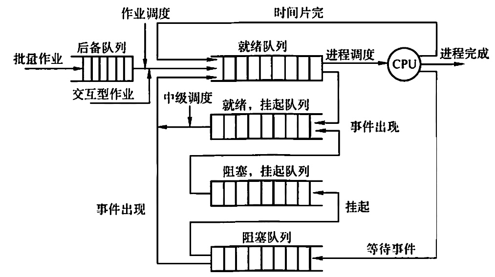
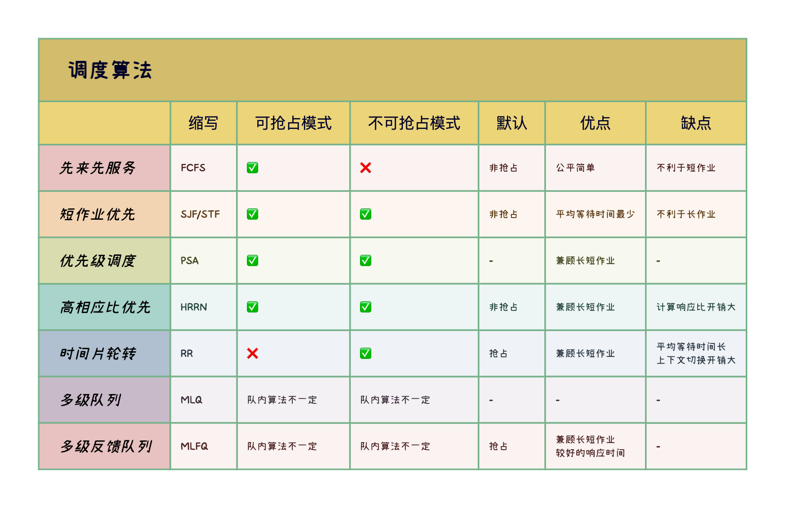
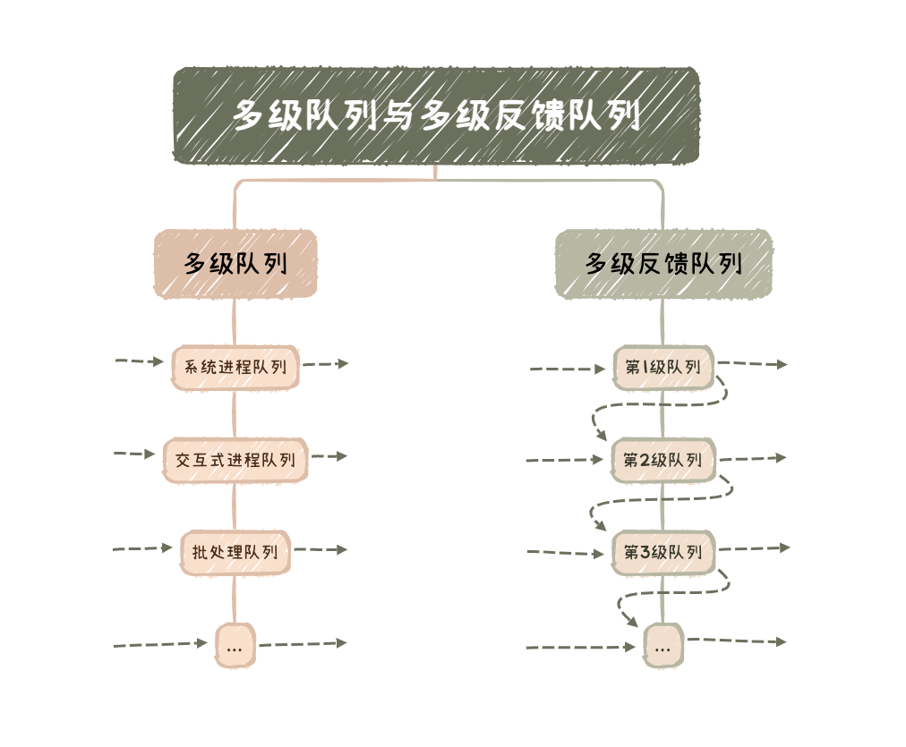

2022.10.14
[toc]
本文是《处理机调度》专题的精简总结版，包含概念关键词、图表汇总、易错点汇总。
➡️ 详细版入口

低级调度/进程调度：就绪队列中选取一个进程，将处理机分配给它，最基本。
调度的指标
CPU利用率：$CPU利用率 = \frac{CPU工作时间}{CPU工作时间+CPU空闲时间}$
响应时间：用户提交进程到首次产生相应的时间
调度的实现
排队器(构造就绪队列)、分排器(从就绪队列中取出分配给CPU)、上下文切换器(新老进程PCB对处理机寄存器的信息转换)
在进程处于临界区时不能进行处理机调度【错】。当进程处于临界区时，说明进程正在占用处理机，只要不破坏临界资源的使用规则，就不会影响处理机的调度，只会影响性能。
经典的调度算法

优先级调度
高响应比优先调度 $$ \begin{align}响应比R_P= \frac{等待时间+要求服务时间}{要求服务时间}\end{align} $$
多级队列调度与多级反馈队列调度
